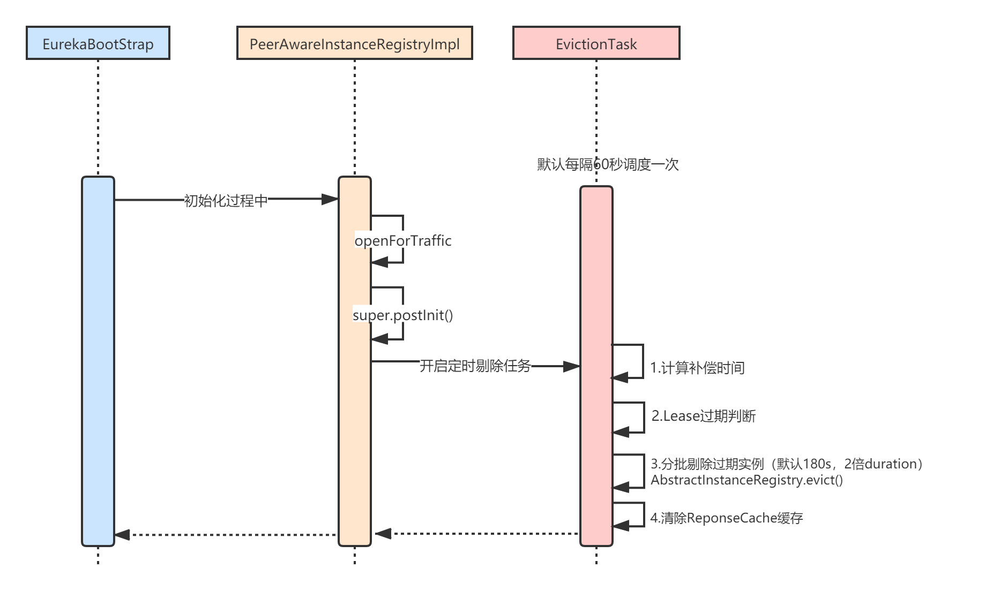

本章，我将讲解Eureka的应用实例剔除（eviction）机制。那么什么情况下会会发生剔除呢？
正常情况下，应用实例下线时，会主动向 Eureka-Server 发起下线（cancel）请求。但应用实例有些时候会异常崩溃，或者机器发生宕机，此时就没有办法主动下线了。
由于Eureka-Server是靠心跳来感知Eureka-Client存在的，所以一旦某个Client应用实例挂掉后，就不会再发送心跳了，那么Eureka-Server在一段时间内没有接收到心跳，就会把对应的应用实例剔除（eviction）。
Eureka的服务剔除机制的源码本身并不难理解，最核心的是它的补偿时间机制和Lease过期判断，这也是本章读者需要重点理解的地方，本章最后我会详细讲解它的意图和原理。

Eureka-Server在启动时，会定时调度一个服务剔除任务（EvictionTask），清理那些租约（Lease）过期的应用实例，可以配置 eureka.evictionIntervalTimerInMs 参数，设置任务执行频率，单位：毫秒，默认60秒。
Eureka-Server的启动入口类是EurekaBootStrap，它在初始化initEurekaServerContext过程中，有下面这样一行代码：
registry.openForTraffic(applicationInfoManager, registryCount);
可以看到，实际是调用了PeerAwareInstanceRegistryImpl.openForTraffic()：
/**
* PeerAwareInstanceRegistryImpl.java
*/
public void openForTraffic(ApplicationInfoManager applicationInfoManager, int count) {
// 每个实例默认30s心跳一次，那么所有实例（count）一分钟的心跳次数就是 count * 2
this.expectedNumberOfRenewsPerMin = count * 2;
// 自我保护机制相关，后续章节讲解
this.numberOfRenewsPerMinThreshold =
(int) (this.expectedNumberOfRenewsPerMin * serverConfig.getRenewalPercentThreshold());
logger.info("Got " + count + " instances from neighboring DS node");
logger.info("Renew threshold is: " + numberOfRenewsPerMinThreshold);
this.startupTime = System.currentTimeMillis();
if (count > 0) {
this.peerInstancesTransferEmptyOnStartup = false;
}
//...
applicationInfoManager.setInstanceStatus(InstanceStatus.UP);
// 这里是重点，服务剔除任务就隐藏在里面
super.postInit();
}
我们重点看最后那一行AbstractInstanceRegistry.postInit()：
/**
* AbstractInstanceRegistry.java
*/
private final AtomicReference<EvictionTask> evictionTaskRef = new AtomicReference<EvictionTask>();
private Timer evictionTimer = new Timer("Eureka-EvictionTimer", true);
protected void postInit() {
//...
// 1.初始化剔除任务
if (evictionTaskRef.get() != null) {
evictionTaskRef.get().cancel();
}
evictionTaskRef.set(new EvictionTask());
// 2.开始调度
// 可以配置eureka.evictionIntervalTimerInMs ，设置任务执行频率，默认60000毫秒
evictionTimer.schedule(evictionTaskRef.get(),
serverConfig.getEvictionIntervalTimerInMs(),
serverConfig.getEvictionIntervalTimerInMs());
}
上述代码，先初始化EvictionTask，也就是说如果已经有这个任务了，先取消掉并设置一个新任务。接着，用一个定时器开始调度任务EvictionTask。
EvictionTask是AbstractInstanceRegistry的一个内部类，它核心是补偿时间的计算以及剔除租约过期的应用实例。什么是补偿时间？为什么要计算这个时间？这个我后面会讲解，我们先重点看剔除逻辑：
/**
* AbstractInstanceRegistry.java
*/
class EvictionTask extends TimerTask {
// 任务上一次执行的时间（用long型毫秒数保存）
private final AtomicLong lastExecutionNanosRef = new AtomicLong(0l);
@Override
public void run() {
try {
// 1.计算一个补偿时间：补偿时间毫秒数 = 当前时间 - 最后任务执行时间 - 任务执行频率
long compensationTimeMs = getCompensationTimeMs();
logger.info("Running the evict task with compensationTime {}ms", compensationTimeMs);
// 2.剔除租约过期的应用实例
evict(compensationTimeMs);
} catch (Throwable e) {
logger.error("Could not run the evict task", e);
}
}
// 计算补偿时间的逻辑
long getCompensationTimeMs() {
long currNanos = getCurrentTimeNano();
long lastNanos = lastExecutionNanosRef.getAndSet(currNanos);
if (lastNanos == 0l) {
return 0l;
}
long elapsedMs = TimeUnit.NANOSECONDS.toMillis(currNanos - lastNanos);
long compensationTime = elapsedMs - serverConfig.getEvictionIntervalTimerInMs();
return compensationTime <= 0l ? 0l : compensationTime;
}
long getCurrentTimeNano() {
return System.nanoTime();
}
}
evict剔除：
/**
* AbstractInstanceRegistry.java
*/
private final ConcurrentHashMap<String, Map<String, Lease<InstanceInfo>>> registry
= new ConcurrentHashMap<String, Map<String, Lease<InstanceInfo>>>();
public void evict(long additionalLeaseMs) {
logger.debug("Running the evict task");
// 1.判断是否允许执行过期逻辑，与自我保护机制有关，后续章节讲解
if (!isLeaseExpirationEnabled()) {
logger.debug("DS: lease expiration is currently disabled.");
return;
}
// 2.获得所有过期的租约集合
List<Lease<InstanceInfo>> expiredLeases = new ArrayList<>();
for (Entry<String, Map<String, Lease<InstanceInfo>>> groupEntry : registry.entrySet()) {
Map<String, Lease<InstanceInfo>> leaseMap = groupEntry.getValue();
if (leaseMap != null) {
for (Entry<String, Lease<InstanceInfo>> leaseEntry : leaseMap.entrySet()) {
Lease<InstanceInfo> lease = leaseEntry.getValue();
// 判断租约是否过期
if (lease.isExpired(additionalLeaseMs) && lease.getHolder() != null) {
expiredLeases.add(lease);
}
}
}
}
// 3.计算本轮要清理的租约数量（Eureka是分批次清理过期租约的，后面会讲到）
int registrySize = (int) getLocalRegistrySize();
int registrySizeThreshold = (int) (registrySize * serverConfig.getRenewalPercentThreshold());
int evictionLimit = registrySize - registrySizeThreshold;
// 本轮清理的租约数量
int toEvict = Math.min(expiredLeases.size(), evictionLimit);
if (toEvict > 0) {
logger.info("Evicting {} items (expired={}, evictionLimit={})", toEvict, expiredLeases.size(), evictionLimit);
// 4.随机清理。因为租约是按照应用顺序添加到数组的，通过随机方式可以避免单个应用的所有租约被全部过期。
Random random = new Random(System.currentTimeMillis());
for (int i = 0; i < toEvict; i++) {
// Pick a random item (Knuth shuffle algorithm)
int next = i + random.nextInt(expiredLeases.size() - i);
Collections.swap(expiredLeases, i, next);
Lease<InstanceInfo> lease = expiredLeases.get(i);
String appName = lease.getHolder().getAppName();
String id = lease.getHolder().getId();
EXPIRED.increment();
logger.warn("DS: Registry: expired lease for {}/{}", appName, id);
// 执行清理
internalCancel(appName, id, false);
}
}
}
真正执行清理的动作是在internalCancel，逻辑和服务下线（cancel）差不多：
/**
* AbstractInstanceRegistry.java
*/
protected boolean internalCancel(String appName, String id, boolean isReplication) {
try {
read.lock();
CANCEL.increment(isReplication);
// 1.从内部Map中删除应用实例
Map<String, Lease<InstanceInfo>> gMap = registry.get(appName);
Lease<InstanceInfo> leaseToCancel = null;
if (gMap != null) {
leaseToCancel = gMap.remove(id);
}
// 2.将移除的实例加入到最近变动队列
synchronized (recentCanceledQueue) {
recentCanceledQueue.add(new Pair<Long, String>(System.currentTimeMillis(), appName + "(" + id + ")"));
}
InstanceStatus instanceStatus = overriddenInstanceStatusMap.remove(id);
if (instanceStatus != null) {
logger.debug("Removed instance id {} from the overridden map which has value {}", id, instanceStatus.name());
}
if (leaseToCancel == null) {
CANCEL_NOT_FOUND.increment(isReplication);
logger.warn("DS: Registry: cancel failed because Lease is not registered for: {}/{}", appName, id);
return false;
} else {
// 3.设置租约的剔除时间戳
leaseToCancel.cancel();
InstanceInfo instanceInfo = leaseToCancel.getHolder();
String vip = null;
String svip = null;
if (instanceInfo != null) {
instanceInfo.setActionType(ActionType.DELETED);
recentlyChangedQueue.add(new RecentlyChangedItem(leaseToCancel));
instanceInfo.setLastUpdatedTimestamp();
vip = instanceInfo.getVIPAddress();
svip = instanceInfo.getSecureVipAddress();
}
// 4.清除ResponseCache中的可读写缓存
invalidateCache(appName, vip, svip);
logger.info("Cancelled instance {}/{} (replication={})", appName, id, isReplication);
return true;
}
} finally {
read.unlock();
}
}
讲解完了服务剔除（eviction）的整体流程，我再来具体分析下上述流程中的几个核心机制。
EvictionTask在运行过程中，会计算一个补偿时间compensationTimeMs，它的计算公式是：
补偿时间 = 当前时间 - 任务上一次执行时间 - 剔除任务执行频率
补偿时间机制的核心目的是避免因为服务剔除任务（EvictionTask）两次调度的时间间隔超过了配置的频率（默认60s），从而导致之后的调度间隔不准确。
class EvictionTask extends TimerTask {
// 任务上一次执行的时间（用long型毫秒数保存）
private final AtomicLong lastExecutionNanosRef = new AtomicLong(0l);
@Override
public void run() {
//...
long compensationTimeMs = getCompensationTimeMs();
//...
}
// 计算补偿时间的逻辑
long getCompensationTimeMs() {
// 当前时间
long currNanos = getCurrentTimeNano();
// 任务上一次执行时间
long lastNanos = lastExecutionNanosRef.getAndSet(currNanos);
if (lastNanos == 0l) {
return 0l;
}
long elapsedMs = TimeUnit.NANOSECONDS.toMillis(currNanos - lastNanos);
// 补偿时间 = 当前时间 - 任务上一次执行时间 - EvictionTask调度间隔（默认60000毫秒）
long compensationTime = elapsedMs - serverConfig.getEvictionIntervalTimerInMs();
return compensationTime <= 0l ? 0l : compensationTime;
}
long getCurrentTimeNano() {
return System.nanoTime();
}
}
举个例子来理解下，假设EvictionTask首次调度的时间是currNanos=12:00:00，因为是第一次调度，所以设置lastNanos=currNanos=12:00:00，那么接下来：
这就是补偿时间的计算方式，这个补偿时间会在判断Lease是否过期时用到，因为比原计划慢了一段时间，所以判断是否过期时就要加上补偿时间。
我们看下Eureka是如何判断什么样的租约（Lease）才算是过期需要被剔除的？AbstractInstanceRegistry.evict()中有下面这样的判断逻辑，additionalLeaseMs是上面计算出的补偿时间：
// 判断租约是否过期
if (lease.isExpired(additionalLeaseMs) && lease.getHolder() != null) {
expiredLeases.add(lease);
}
/**
* Lease.java
*/
public boolean isExpired(long additionalLeaseMs) {
return (evictionTimestamp > 0 || System.currentTimeMillis() > (lastUpdateTimestamp + duration + additionalLeaseMs));
}
public void renew() {
// duration是租约有效期，默认90秒
lastUpdateTimestamp = System.currentTimeMillis() + duration;
}
evictionTimestamp：应用实例下线时，这个时间戳会更新，这个时间戳大于零，说明当前租约已经过期了；
lastUpdateTimestamp：上一次续租成功的时间戳，在Lease.renew()方法里更新；
duration：租约有效期，默认90s，每一次心跳（续租）成功后，lastUpdateTimestamp会加上这个值。
我们先不考虑补偿时间additionalLeaseMs，来考虑下应该怎么判断这个租约有没过期？是不是就是当前时间与上一次心跳成功的时间差大于租约有效期？也就是System.currentTimeMillis() - lastUpdateTimestamp > duration？ 也就是说，如果这个租约超过90s还没被续租，就应该过期掉。
但是，写Eureka心跳续租代码的这个哥们儿，把lastUpdateTimestamp的更新加了个duration，也就是说下面的这个判断：
System.currentTimeMillis() - lastUpdateTimestamp > duration
这其实是一个bug，最终Lease是否过期的判断就变成了下面这样：
System.currentTimeMillis() - (duration + lastUpdateTimestamp) > duration
也就是说，Eureka-Server对租约过期时间的判断实际上并不是配置的duration（默认90s），而是两倍的duration，即90+90=180秒。
补偿时间
additionalLeaseMs，其实就是为了补偿任务延迟执行的那一段时间。
获取到所有过期的Lease后，Eureka-Server不会一次性将所有过期实例都剔除掉，而是按照一定比例，分批随机剔除：
/**
* AbstractInstanceRegistry.java
*/
private final ConcurrentHashMap<String, Map<String, Lease<InstanceInfo>>> registry
= new ConcurrentHashMap<String, Map<String, Lease<InstanceInfo>>>();
public void evict(long additionalLeaseMs) {
logger.debug("Running the evict task");
// ...
// 所有实例数量，假设20个，本次所有过期实例expiredLeases假设10个
int registrySize = (int) getLocalRegistrySize();
// 保留数量，20 * 0.85 = 17 个 ，renewalPercentThreshold默认为0.85
int registrySizeThreshold = (int) (registrySize * serverConfig.getRenewalPercentThreshold());
// 本次剔除上限： 20 - 17 = 3
int evictionLimit = registrySize - registrySizeThreshold;
// 本轮清理的租约数量：Math.min(10,3) = 3
int toEvict = Math.min(expiredLeases.size(), evictionLimit);
if (toEvict > 0) {
logger.info("Evicting {} items (expired={}, evictionLimit={})", toEvict, expiredLeases.size(), evictionLimit);
// 4.随机清理。因为租约是按照应用顺序添加到数组的，通过随机方式可以避免单个应用的所有租约被全部过期。
Random random = new Random(System.currentTimeMillis());
for (int i = 0; i < toEvict; i++) {
// Pick a random item (Knuth shuffle algorithm)
int next = i + random.nextInt(expiredLeases.size() - i);
Collections.swap(expiredLeases, i, next);
Lease<InstanceInfo> lease = expiredLeases.get(i);
String appName = lease.getHolder().getAppName();
String id = lease.getHolder().getId();
EXPIRED.increment();
logger.warn("DS: Registry: expired lease for {}/{}", appName, id);
// 执行清理
internalCancel(appName, id, false);
}
}
}
看我上面的注释，假设Eureka-Server一共注册了20个实例，本次剔除任务一共发现10个过期实例，那实际上本轮只会随机剔除3个，剩下的在下一轮任务中再去剔除。
本章，我讲解了Eureka服务剔除机制的原理。核心流程就是Eureka-Server端有一个定时任务，每隔60s会检测租约过期的实例，然后分批随机剔除。
服务剔除的重点是理解补偿时间机制和租约过期判断逻辑，补偿时间的本质是为了补偿任务延迟执行而消耗的毫秒数，租约过期判断则有一个bug，租约有效期并不是默认的配置90s，而是两倍的配置时间，即180秒。